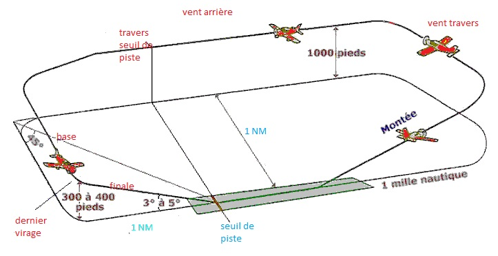

Qu'est-ce qu'un tour de piste ?
Le tour de piste est une trajectoire standardisée autour d'un aérodrome, utilisée pour la pratique des décollages et des atterrissages. Il permet aux pilotes de s'entraîner tout en respectant les procédures de sécurité et la séparation avec d'autres aéronefs.
Objectifs du tour de piste :
- Pratiquer les décollages et les atterrissages.
- Maintenir un flux organisé du trafic aérien.
- Réagir à des situations d’urgence (exemple : remise de gaz).
Les segments d'un tour de piste :
Vent de face (Runway Heading)
- Correspond à l'alignement sur la piste pendant le décollage.
- Le pilote grimpe à l'altitude de circuit (généralement entre 800 et 1 500 pieds au-dessus du sol, selon les règles locales).
Vent traversier (Crosswind Leg) :
- Une fois que le pilote atteint une altitude de sécurité, il effectue un virage à 90° à gauche ou à droite (selon le circuit) pour entrer en vent traversier.
Vent arrière (Downwind Leg) :
- Le pilote vole parallèlement à la piste, mais en sens opposé. C'est ici que les configurations de descente (volets, puissance moteur) sont préparées.
Vent arrière au travers de la piste (Base Leg) :
- Après le vol en vent arrière, un virage de 90° est effectué pour s'approcher de l'axe de la piste.
Finale (Final Leg) :
- Le dernier segment où l’avion est aligné avec la piste pour l’atterrissage.

Conseil de calcul : Pour faire votre virage à 90°, si vous tournez à droite, vous faite +1 à la centaine et -1 à la dizaine, dans le cas inverse, si vous tournez à gauche, vous faites -1 à la centaine et +1 à la dizaine.